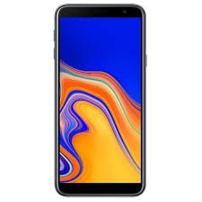

Samsung / Смартфон Galaxy J4+ (2018): 6’’1480×720 Super Amoled Snapdragon 425 3Gb/32Gb 13Mp/5Mp 3300mAh
Описание товара

Благодаря своим основной светосильной 13 МП (F1.9) и фронтальной 5 МП камерам Galaxy J4+ позволяет создавать потрясающие снимки. Кнопка перемещающегося затвора делает процесс фотосъемки ещё проще, позволяя фотографировать одной рукой.
Samsung SM A305F Galaxy A30 получил восьмиядерный процессор, 3 ГБ оперативной памяти, накопитель на 32 ГБ, двойную основную камеру с 16 мегапиксельным модулем для обычных фото и 5 мегапиксельным для широкоугольных.
Благодаря своим основной светосильной 13 МП (F1.9) и фронтальной 5 МП камерам Galaxy J4+ позволяет создавать потрясающие снимки. Кнопка перемещающегося затвора делает процесс фотосъемки ещё проще, позволяя фотографировать одной рукой.
Характеристики товара
| Версия операционной системы | Android 9.0 |
| Тип дисплея/экрана | Super AMOLED |
| Разрешение экрана | 2220×1080 |
| Объем встроенной памяти (Гб) | 32 ГБ |
| Основная камера (млн. пикс.) | 16 Мп |